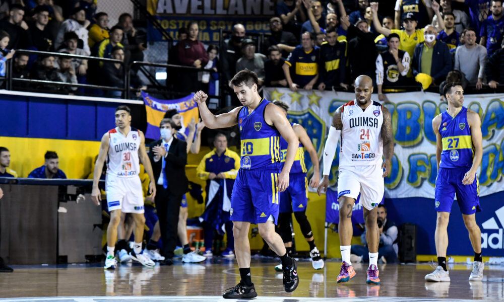

Basquet
El Club Atlético Boca Juniors es una entidad deportiva argentina con sede en el barrio de La Boca, Buenos Aires. Fue fundado en dicho barrio el 3 de abril de 1905 por seis vecinos adolescentes hijos de italianos. El básquet de Boca Juniors es uno de los más importantes y exitosos de la Argentina, ya que tuvo gran protagonismo tanto en la era amateur y semi-amateur de las distintas ligas de básquet metropolitano de la ciudad de Buenos Aires, como en la Liga Nacional de Básquet, donde es uno de los máximos campeones, razón por la cual es considerado uno de los denominados grandes de la liga nacional de básquet. Grandes jugadores y entrenadores vistieron la casaca azul y oro antes y/o después de representar a la selección nacional de básquet e incluso de jugar en las grandes ligas de Europa y la NBA..
Resumen Ultimo Partido
No fue el mejor arranque para el Griego, cayó ante Boca en su estadio por 95 a 84. Justin Satchell fue el goleador del partido con 21 unidades. Mientras que en la visita Andy Ogide fue quien más aportó con 18 tantos.
El primer cuarto arrancó con un Boca más dominante, pero hacia la mitad del mismo Atenas se acomodó, pasaron los nervios del inicio y con intensidad en ambos aros se quedó con el período por 28 a 18. Para el segundo parcial, Boca sintió el golpe y reaccionó. Los dirigidos por Gonzalo García ajustaron la defensa y se pusieron en juego nuevamente. La primera mitad terminó 43 a 42 para el griego.
Proximo Partido
Boca Vs San Lorenzo
Sabado 15/10/2022 20:00hs